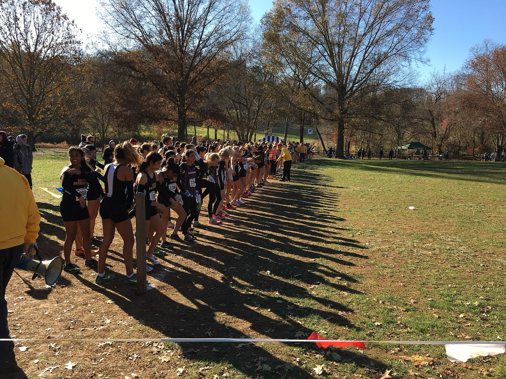

Practice-day emergencies
- August repeats. The kid who always finishes first is weaving at the end of the fourth interval, answering a question you didn’t ask. Cool him now, with the cooler and the hose — the ambulance comes to him.
- The berm and the wrist. She went over the bars on the flow trail and her wrist has a new shape. Splint it, check her fingers before and after, and make the parent call calm and factual.
- Where’s his inhaler? Mid-workout wheeze, and the answer lives on a form you read in September — or didn’t. Roster medical forms are first aid equipment.
Read these before the season
Ordered by what shows up at practice:
- Heat Illness — interval days are heat labs — know the spectrum and the cool-first rule
- Medical Emergencies — asthma, diabetes, and the conditions your roster forms already told you about
- Musculoskeletal Injuries — crash wrists and collarbones — splint, check the fingers, call the parent
- Patient Assessment — a calm system beats a crowd of teammates with opinions
- Evacuation — getting EMS to the far side of a trail network with no street address
Then pressure-test it
Interactive scenarios — one decision at a time, tempting mistakes included, debrief at the end:
- Cool First — the interval-day collapse
- Wiggle, Feel, Warm — the crash wrist, splinted and re-checked
- Sugar First — the roster kid, going low
The certification question, honestly. “Wilderness First Aid” isn’t a regulated credential. No government body defines what a WFA card means — it means whatever the company that printed it says it means. What counts in front of a patient is whether you can do the work. This course teaches the work, free, and issues a record of completion — not a certificate, and we won’t pretend otherwise. League, school, and safe-sport requirements — including CPR and first-aid cards from approved providers — stand; check what your organization mandates and keep it current. This is the fluency underneath the card: the coach who has rehearsed the bad practice day, not just filed the paperwork. If nobody requires you to hold a card, what you need are the skills, not the laminate.
What this is
Fifteen lessons, a 40-question knowledge check, sixteen practice scenarios, a printable field reference card, and a kit checklist. Free, no account, nothing recorded about you, source on GitHub. It teaches decision-making, not hands-on skill — practice the hands-on parts on a real, padded, complaining friend.
Adjacent worlds: nurses, medics & clinicians heading outdoors · wilderness therapy field instructors · outdoor event organizers — gravel races, ultras, festivals